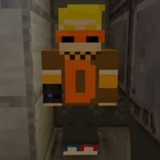

Линад — это персонаж, которого многие называют «клоном Данила», но это более сложная и загадочная личность, созданная в серии "Новые Похождения". Линад является своеобразным зеркалом главного героя, с которым у Данила происходят ключевые взаимодействия в последней части сериала. Хотя имя Линад нигде прямо не упоминается, оно представляет собой обратное написание имени "Данил", что подчёркивает его роль как тёмного отражения главного персонажа.
Линад в Н.П.▼
Линад появляется в финальных сериях первого сезона "Новые Похождения". Данил встречает его в зловещем доме с красными дверями. Там Линад предлагает Данилу уничтожить этот странный мир, что сразу поднимает вопрос о его истинных намерениях. Линад символизирует внутренние конфликты Данила, отражая его страхи и стремления к свободе, которые Данил не всегда может осознать. Взаимодействие между Данилом и Линадом носит напряжённый характер, и, хотя Данил соглашается помочь Линаду, в этом союзе чувствуется скрытая угроза.
Антагонист▼
Линад по сути не является типичным злодеем, он скорее антигерой или тёмное альтер-эго Данила. Его присутствие создаёт дисбаланс в мире, где действия главного героя становятся более мрачными и неясными. Однако, несмотря на свою роль как противоположность Данила, Линад помогает Данилу завершить некоторые миссии, хотя его истинные мотивы остаются загадкой. Таким образом, Линад играет важную роль в развитии истории, подталкивая Данила к более решительным действиям, пусть и через хаос.
Итог ▼
Линад — это важный элемент вселенной "Новые Похождения", символизирующий внутренний конфликт и развитие главного героя. Он представляет собой тёмное отражение Данила, с которым главный герой вынужден столкнуться в финальной части своей истории.